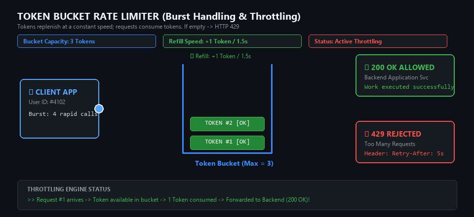

05 · Rate limiting
Part 1 · Networking & traffic · ⏱️ ~20 min read · Prerequisites: 01 · Client–server networking, 04 · API gateways
🧒 The 30-second version
A rate limiter is a rule like "each user may send at most 100 requests per minute." When someone goes over the limit, the server politely says "slow down, try again later" (HTTP status 429 Too Many Requests) instead of doing the work. This keeps one noisy user, buggy script or attacker from slowing the app down for everyone else.
🍕 Everyday analogy: the bubble-tea shop
A small bubble-tea shop has one person making drinks, and they can make about one drink every 12 seconds (5 per minute).
- Without a rule, a school bus arrives, 40 kids order at once, and everyone waits 8 minutes, including the regulars who just wanted one drink.
- So the shop gives every customer tokens: you get 5 tokens, each drink costs 1, and you get one token back every 12 seconds. A kid who already spent all 5 has to wait. Everyone else is still served quickly.
| In the shop | In the system | | :---
🏢 Real-World Deep Dives: Detailed case studies of how Google & Netflix implement this in production are documented in REAL_WORLD_EXAMPLES.md.
| :--- |
| Customer | A client (user, API key or IP address) |
| Ordering a drink | Sending a request |
| Tokens in your pocket | Requests you're still allowed to make |
| "Sorry, wait a bit" | HTTP 429 Too Many Requests + a Retry-After header |
| The drink-maker | Your servers and database: the limited resource you're protecting |
🧩 The problem it solves
Your API runs happily at 200 requests/second. Then:
- a customer's script has a bug and retries in a tight loop at 5,000 req/s, or
- someone tries 1 million passwords against your login page, or
- a free-tier user scrapes your whole catalogue.
Your database can handle maybe 1,000 req/s. Without a limit it falls over, and every user gets errors, not just the misbehaving one. Rate limiting turns "the whole site is down" into "one client gets 429s".
It also helps with cost (paid APIs or LLM calls you forward to) and fairness (free vs paid tiers).
🖼️ Picture it

sequenceDiagram
autonumber
participant C as 👤 Client
participant RL as 🚦 Rate limiter
participant API as ⚙️ API server
C->>RL: GET /orders
RL->>RL: How many requests has this client made recently?
alt under the limit
RL->>API: forward request
API-->>C: 200 OK + X-RateLimit-Remaining: 42
else over the limit
RL-->>C: 429 Too Many Requests + Retry-After: 30
end- The client sends a request as normal.
- The rate limiter, which usually lives in the API gateway (see module 04), works out who is asking (user ID, API key or IP address) and checks that client's counter.
- If there's room, the request goes through to the real server.
- The response tells the client how many requests it has left, so well-behaved clients can slow down on their own.
- If there's no room, the limiter answers immediately with 429. The expensive server never even sees the request.
🔢 Walk-through with real numbers
Rule: 5 requests per 60 seconds. A client sends 5 requests between 55 s and 59 s, then 5 more between 60.5 s and 62.5 s. That's 10 requests in under 8 seconds, double the limit. Here is what each algorithm does. This is real output from demo.py:
time fixed window sliding log sliding counter token bucket leaky bucket
55.0s ✅ allow ✅ allow ✅ allow ✅ allow ✅ allow
56.0s ✅ allow ✅ allow ✅ allow ✅ allow ✅ allow
57.0s ✅ allow ✅ allow ✅ allow ✅ allow ✅ allow
58.0s ✅ allow ✅ allow ✅ allow ✅ allow ✅ allow
59.0s ✅ allow ✅ allow ✅ allow ✅ allow ✅ allow
60.5s ✅ allow ❌ 429 ✅ allow ❌ 429 ❌ 429
61.0s ✅ allow ❌ 429 ❌ 429 ❌ 429 ❌ 429
61.5s ✅ allow ❌ 429 ❌ 429 ❌ 429 ❌ 429
62.0s ✅ allow ❌ 429 ❌ 429 ❌ 429 ❌ 429
62.5s ✅ allow ❌ 429 ❌ 429 ❌ 429 ❌ 429
90.0s ❌ 429 ❌ 429 ✅ allow ✅ allow ✅ allow
110.0s ❌ 429 ❌ 429 ✅ allow ✅ allow ✅ allow
130.0s ✅ allow ✅ allow ✅ allow ✅ allow ✅ allow
Fixed window lets all 10 through. The next section explains why, and each algorithm in turn.
⚙️ How it works: the five classic algorithms
1. Fixed window counter: "a counter that resets on the minute"
Keep one counter per client per minute: requests[client][12:01] = 3. When the clock moves to 12:02, start again from 0.
window 0 (0–60s) window 1 (60–120s)
|-----------------------------[▮▮▮▮▮]|[▮▮▮▮▮]-----------------------------|
55–59s 60.5–62.5s
counter = 5 → full ↑ counter resets to 0 here
- ✅ Very simple: one number per client, easy to store in Redis with
INCR+EXPIRE. - ❌ Boundary burst: 5 requests at the end of one window plus 5 at the start of the next means 10 requests in a few seconds. In the table, that's every ✅ from 55 s to 62.5 s.
- ❌ It also punishes unfairly. The 90 s and 110 s requests get rejected because window 1 is "full", even though the burst ended long ago.
2. Sliding window log: "remember every timestamp"
Store the time of every accepted request. For a new request, throw away timestamps older than 60 s and count what's left.
At 60.5 s the log holds [55, 56, 57, 58, 59]. All five are within the last 60 s, so the count is 5 and the request is rejected. At 90 s they're still within the last 60 s (90 − 60 = 30, and 55 > 30), so that's rejected too. At 130 s they've all expired, so it's allowed.
- ✅ Exact. Never more than 5 in any 60-second stretch.
- ❌ Memory-hungry. A limit of 10,000/hour means storing up to 10,000 timestamps per client.
3. Sliding window counter: "two counters and a bit of maths"
A clever middle ground. Keep only the counts for the current and previous fixed windows, and estimate the last 60 seconds by assuming the previous window's requests were spread evenly:
estimate = current_count + previous_count × (fraction of the previous window still inside the last 60 s)
Worked example at 61.0 s:
- previous window (0–60 s) accepted 5
- current window (60–120 s) has accepted 1 so far (the one at 60.5 s)
- we're 1 s into the current window, so 59/60 of the previous window still overlaps the last 60 s
estimate = 1 + 5 × 59/60 ≈ 5.92 → that's ≥ 5, so reject.
Notice it allowed 60.5 s: 0 + 5 × 59.5/60 ≈ 4.96 was just under 5. That's the approximation showing. It assumes the previous 5 requests were spread over the whole minute, when really they were bunched at the end. It slips by one, not by five, and it uses just two numbers per client. Big APIs often use this one.
4. Token bucket: "pocket full of tokens that slowly refills"
This is the bubble-tea shop. Each client has a bucket that holds at most 5 tokens and gets 1 new token every 12 s (5 per minute). Each request costs 1 token. No token means 429.
| time | tokens before | request? | tokens after |
|---|---|---|---|
| 55 s | 5.00 | ✅ | 4.00 |
| 59 s | ≈1.33 | ✅ | ≈0.33 |
| 60.5 s | ≈0.46 | ❌ (less than 1) | ≈0.46 |
| 90 s | ≈2.92 | ✅ | ≈1.92 |
- ✅ Allows short bursts (up to the bucket size) but keeps the long-run average fixed. Real users really do click a few times quickly.
- ✅ Only two numbers per client:
tokensandlast_refill_time. - Two knobs to tune: bucket size (how bursty) and refill rate (the average speed).
- Used widely, for example by AWS API Gateway and Stripe.
5. Leaky bucket: "a funnel that drips at a fixed speed"
Requests pour into a funnel (a queue) that holds 5. They drip out to the server at a constant rate of one every 12 s. If the funnel is full, new requests spill over and are rejected.
- ✅ The server sees perfectly smooth traffic, which is great for something fragile like an old payment provider.
- ❌ Bursts are queued, not served quickly. A user who clicks 3 times waits for all 3 drips.
In the demo, the leaky bucket gives the same allow/reject answers as the token bucket, because both have size 5 and the same speed. The difference is when accepted requests run: the token bucket serves them immediately, the leaky bucket queues them and releases them one every 12 s.
⚖️ Trade-offs
| Algorithm | Memory per client | Accuracy | Bursts | Pick it when… |
|---|---|---|---|---|
| Fixed window | 1 counter | ❌ up to 2× at boundaries | uncontrolled | you need something simple now, and 2× spikes are OK |
| Sliding log | 1 timestamp per request | ✅ exact | none | limits are small (e.g. 5 login attempts / 15 min) |
| Sliding window counter | 2 counters | ≈ very close | small | general API limits at scale |
| Token bucket | 2 numbers | ✅ exact average | ✅ allowed, up to the bucket size | user-facing APIs where short bursts are normal |
| Leaky bucket | queue of size N | ✅ | smoothed out | protecting something that needs a steady flow |
Where to put the limiter
| Place | Good for | Watch out |
|---|---|---|
| In the client app | Being nice, avoiding wasted calls | Never trust it: attackers don't use your app |
| API gateway / load balancer | One place for all services; rejects early and cheaply | Needs shared state if you run many gateways |
| Inside each service | Per-endpoint rules (e.g. expensive /export) |
Logic gets duplicated across services |
What to limit by
- API key / user ID: fairest, but only works after login.
- IP address: works before login, but a whole office or mobile carrier can share one IP (NAT), so you may block innocent people.
- Often you need both: a loose per-IP limit plus a stricter per-user limit.
🚫 Common mistakes
- Counting in each server's memory when you run 10 servers. Each server allows 100/min, so the real limit is 1,000/min. → Keep counters in a shared store like Redis. That's module 25.
- "Read count, then write count+1" as two steps. Two servers both read
99, both allow, and you're at 101. → Use an atomic operation (RedisINCR, or a Lua script that checks and increments in one step). - Returning 500 or just dropping the connection. → Return 429 with
Retry-After, so clients know it's on purpose and when to come back. - Clients retrying immediately after a 429. That makes the storm worse. → Retry with exponential backoff + jitter (module 20).
- Taking the whole API down when the rate limiter's Redis is down. → Decide up front: fail open (allow traffic and log a warning) or fail closed (reject everything). Failing open keeps the product working; failing closed is safer for things like login protection.
💻 Try it yourself
cd 05-rate-limiting
python demo.py
All five algorithms take a fake clock (now) as input, so the run is repeatable. Things to try:
- Change
TRAFFICto one request every 15 s for 2 minutes ([i * 15.0 for i in range(9)]). Every algorithm allows everything. Why? Now try every 10 s: who starts rejecting, and why? - Raise the token bucket's
capacityto 10. What happens to the burst? - In
SlidingWindowCounter, printestimateat each step and check the 60.5 s and 61 s maths above.
🌍 Where you'll see it
- GitHub API: 5,000 requests/hour per token. Check the
x-ratelimit-remainingheader on any response. - OpenAI, Anthropic and other LLM APIs: separate limits for requests/min and tokens/min.
- Login pages: "Too many attempts, try again in 15 minutes."
- Nginx (
limit_req) and Cloudflare rate-limiting rules.
🎯 Top Interview Questions & Deep Answers
Q1: "How would you design a distributed rate limiter running across 50 API Gateway servers without race conditions?"
💡 Click to reveal the ideal senior engineering answer
- The Problem: If 50 gateway nodes each keep an in-memory counter, a client sending 100 requests can make 50 × 100 = 5,000 requests total. Conversely, if nodes coordinate using naive read-then-write steps (
count = GET user; if count < limit: SET user (count + 1)), concurrent requests produce classic race conditions allowing double the limit. - The Solution (Centralized Redis + Atomic Lua Script):
- Maintain counters in a centralized Redis Cluster.
- Execute the sliding window or token bucket algorithm inside an atomic Redis Lua script (
EVALSHA). Because Redis executes Lua scripts as a single atomic transaction on a single thread, no two requests can interleave between checking the count and incrementing it. - High-Performance Optimization: Use a local in-memory filter (e.g., Token Bucket with synchronized batches) to reject obvious denial-of-service spam at the edge before even pinging Redis.
Q2: "What is the 'window boundary spike' problem in Fixed Window Counter, and how does Sliding Window Counter solve it?"
💡 Click to reveal the ideal senior engineering answer
- The Fixed Window Flaw: Suppose the limit is 100 requests per minute, resetting at 12:00:00, 12:01:00, etc.
- A user sends 100 requests at 12:00:59.
- The counter resets to 0 at 12:01:00.
- The user immediately sends 100 requests at 12:01:01.
- Both windows were legally under 100, but the server just suffered 200 requests in 2 seconds—a 2× traffic burst that can crash the database.
- The Sliding Window Counter Solution:
- Instead of resetting cleanly at the boundary, it calculates an estimated count based on the overlap with the previous window:
- At 12:01:15 (25% into the new minute), the weight of the previous minute is 75%. If the user sent 100 requests at 12:00:59, their estimated count is 0 + 100 × 0.75 = 75, allowing only 25 more requests. The boundary burst is mathematically eliminated with minimal memory (O(1)).
Q3: "What happens if your centralized Redis rate-limiter cluster crashes? Do you fail open or fail closed?"
💡 Click to reveal the ideal senior engineering answer
This is an architectural trade-off that depends strictly on the business criticality of the endpoint:
- Fail Open (Recommended for General APIs & E-Commerce):
- If Redis times out or throws an error, the Gateway catches the exception, logs an alert, and allows the request through to the backend.
- Why: You never want a rate-limiting infrastructure blip to prevent paying customers from buying products or reading their dashboard.
- Fail Closed (Mandatory for High-Security / Expensive Endpoints):
- For
/login,/password-reset, or/ai/expensive-llm-generate, the Gateway rejects incoming traffic if Redis is unreachable. - Why: Failing open on login endpoints would leave your database completely exposed to credential-stuffing and brute-force password cracking attacks.
- For
Q4: "How do you rate-limit unauthenticated users sharing a corporate NAT IP or mobile carrier without blocking an entire office?"
💡 Click to reveal the ideal senior engineering answer
If you rate-limit purely by client_ip, 5,000 employees working in the same corporate office or on the same mobile network share a single public NAT IP address, and one person's script could lock out the entire company.
Defense in Depth Strategy:
- Multi-Factor Fingerprinting: Combine IP address with client attributes:
hash(IP + User-Agent + Accept-Language + Client-Fingerprint-Cookie). - Dual-Tier Limits:
- A relaxed broad limit per IP address (e.g., 5,000 requests/min to accommodate corporate NATs).
- A strict granular limit per anonymous browser session cookie or device ID (e.g., 60 requests/min).
- Proof-of-Work / CAPTCHA Fallback: When an IP crosses the warning threshold, instead of hard-rejecting with 429, serve a Cloudflare Turnstile challenge. Legitimate humans pass in 1 second; automated scrapers are halted.
✅ Check yourself
- A rule says "10 requests per minute" and uses a fixed window. What's the most requests a client could get through in 2 seconds?
Answer
20. 10 at 12:00:59 and 10 at 12:01:00. The counter resets on the minute boundary.
- Token bucket with capacity 20 and a refill of 1 token/second. A client has been idle for an hour. How many requests can it make instantly, and how many in the next 10 seconds after that?
Answer
20 instantly (the bucket is capped at 20, not 3,600), then about 10 more over the next 10 s at 1 per second.
- You run 4 API servers, each with its own in-memory limit of 100/min. What's the real limit, and how do you fix it?
Answer
Up to 400/min, because each server counts separately. Fix it with a shared counter (e.g. Redis) using atomic increments.
- Why might limiting only by IP address block innocent users?
Answer
Many people can share one public IP: an office network, a university or a mobile carrier (NAT). One heavy user can use up the limit for all of them.
- Which algorithm would you pick for "max 5 password attempts per 15 minutes", and why?
Answer
Sliding log. The limit is tiny, so storing 5 timestamps is cheap, and you want it exact. A boundary burst of 10 attempts would be a security hole.
📚 Go deeper
- SDI-1 ch 4, Design a rate limiter: an interview walk-through of these algorithms plus a full distributed design.
- UDS, Upstream resiliency chapter: rate limiting alongside load shedding and load leveling, as ways to protect a service from its callers.
🔗 Related
- 04 · API gateways & proxies: where rate limiters usually live.
- 20 · Fault tolerance & resilience: what clients should do when they get a 429.
- 25 · Distributed rate limiter: running these algorithms across many servers with Redis.